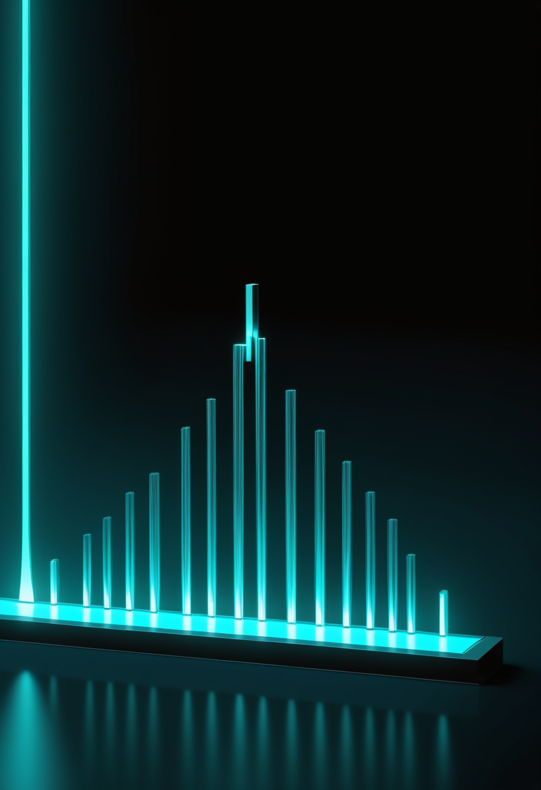
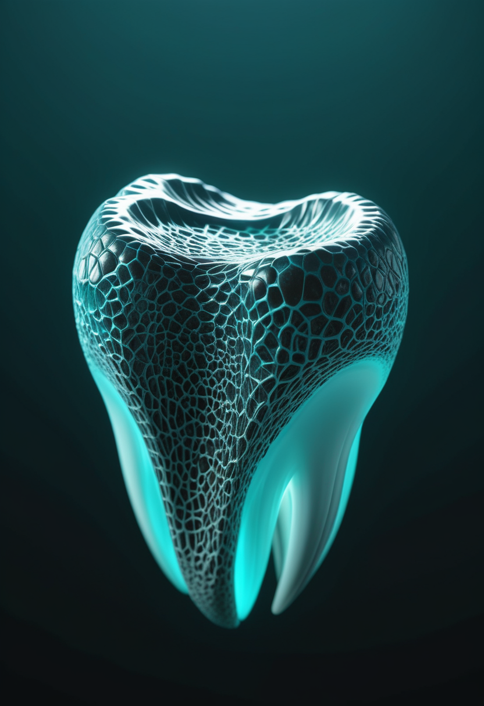

木曜日の便り。DRCのブンディブギョ型エボラは、DRCが9月22日に報告した集計(9月21日までのデータ)で確定7,773例・死亡3,759人になった。直近21日間でイトゥリ州の感染は約26%、オー・ウエレ州は約15%減ったが、北キブ州は73%増えている。前号で79.9%まで落ちた接触者の追跡は、ECDCの集計で84.5%へ戻ったが、9月17日の87.6%にはまだ届かない。命の章は、サラネルセンの第3相で米国と日本の最初の被験者に投与が行われたこと、承認済み3剤の費用対効果を問う総説、SMAを神経発達の面からも見直す総説を伝える。自由の章では、UCSFのチームが運動野の皮質脳波から発話と身ぶりを同時に復号し、音声BCIの成績を共通の物差しで比べる提案も出た。基盤の章は上のエボラのほか、CDCが2026年初の麻疹関連死を1件計上したこと、クレードIのmpoxが欧州の小さな国々でも報告されたことを扱う。畏敬の章は、3I/ATLASの水の重水素比、Hubbleが捉えた中心と円盤が直角に回る銀河、LHCで見つからなかった量子ブラックホール、室温ダイヤモンドの量子レジスタである。美の章は、歯とフィトリスに残る人の営みと、AIの意識をめぐる不確実性への二つの答え方を伝える。
9/23号の続報 ― DRCのブンディブギョ型エボラは、DRCが9月22日に報告した集計(9月21日までのデータ)で、確定7,773例・死亡3,759人になった。致死率は約48.4%(本紙計算)。前号の7,672例・3,699人から、二回の報告で+101例・+60人である。流行開始から130日を超えたこの週、UN Newsは、直近21日間で震源地イトゥリ州の感染が約26%、オー・ウエレ州が約15%減ったと伝えた。ところが同じ21日間に、北キブ州は73%増えている。WHOの地域緊急事態部長は、こうした傾向は流行がまだ制御下になく、広い地理的範囲に広がったままだと示していると述べた。国全体の曲線は落ち着いて見えるが、その平均は、下がる州と上がる州の差し引きでできている。もう一つ、前号で本紙が問題にした接触者の追跡は、ECDCの集計で79.9%から84.5%へ戻った。それでも9月17日公表時点の87.6%には届かない。平均が下がるとき、次の震源は平均の外で育つ。
Cure SMAは9月22日、BiogenがSMA向けアンチセンス薬サラネルセンの開発計画の最新状況を公表したと伝えた。第3相試験が新たに始まり、乳児から成人までを対象に組み入れが進んでいて、米国と日本ではすでに最初の被験者に投与された。本紙は9/16号までに、STELLAR-1・STELLAR-2・SOLARの第3相3試験が、発症前の乳児から15〜60歳までを対象に、80mgを年1回投与する設計だと伝えてきた。それは計画の話だった。今日の更新は、その計画の一部が実際の投与に入ったという一点である。年1回投与が成り立つかどうかは、この試験の追跡が進むまで分からない。Cure SMAのページに載っているのは開始の事実で、被験者数や試験ごとの進み具合は書かれていない。詳しい内容はBiogenが公開したPDFにあるとされ、本号ではそのPDFを読めていない(要確認)。
Frontiers in Pharmacologyに載った総説「Therapeutic advances in spinal muscular atrophy: a review of clinical, safety, and economic considerations」(Belančić氏ら、2026年9月)は、承認済みの疾患修飾薬3剤、ヌシネルセン、オナセムノゲン アベパルボベク、リスジプラムを、臨床効果・安全性・経済性の三方向から整理した。臨床では、3剤とも生存の改善、運動マイルストーンの達成、または運動機能の改善をもたらしている。安全性では、それぞれに既知の有害事象があるものの、臨床試験の所見と一致する管理可能な範囲だと述べる。ところが経済性の結論は正反対で、現在のSMA治療薬は、標準的な支払意思額の閾値に照らすと費用対効果的ではないとされる。効くかどうかと、払えるかどうかが、別々の帳簿になっている。この構図の上に、9月11日にFDAが承認したISEMBYLD(年間の表示価格は約31万ドル)が上乗せされる。総説の要旨からは、この新薬まで織り込んだ評価かどうかは分からない(要確認)。
Advances in Therapyに載ったOkamoto氏の総説「Disease-Modifying Therapies in Spinal Muscular Atrophy: Neurodevelopmental and Behavioral Outcomes in the Treatment Era」は、SMAの見方を広げる必要を論じる。SMAは長く、下位運動ニューロンの変性の病気で、認知機能は保たれると考えられてきた。しかし治療前の研究は、生存バイアス、運動に頼った評価ツール、非運動領域の評価の少なさに左右されていたと著者は指摘する。発症前の治療で発達の成績は大きく上がったが、認知・言語・行動の表現型は人によって不均一で、最適に治療された人でも、表出言語、実行機能、社会的コミュニケーションに微妙な脆弱性が見つかりうる。著者は、SMAを持続的な神経発達上の脆弱性を伴う病態として捉え直すことを提案し、早期介入は必要だが完全な正常化に常に十分とは限らないと述べる。評価の側にも課題があり、運動の影響を受けない、領域ごとの評価が要る。Cure SMAは9月16日、6月にオーランドで開かれた年次会議の全セッションの要約を公開し、テーマに神経認知、整形外科、出生前治療を挙げた。なおこの総説のオンライン公開は5月26日で、直近1〜2週の新規ではない。
本号の3本は、前号までの「届くか」の先にある問いを並べている。サラネルセンは、年1回という次の形が、ようやく実際の投与に入ったという知らせである。費用対効果の総説は、3剤とも命と運動機能を守りながら、標準的な閾値では割に合わないと評価されるという、効き目と価格の別々の帳簿を見せる。神経発達の総説は、その薬で生き延びた子どもたちに、言語・実行機能・社会的コミュニケーションの微妙な脆弱性が見つかりうると述べる。届いたあとに、続けて払えるか、そして何を測り続けるかが問われる。承認や投与開始は区切りではなく、問いが増える起点である。
カリフォルニア大学サンフランシスコ校(UCSF)のEdward Chang氏らは、Nature Neuroscienceに「Simultaneous speech and gesture decoding for multimodal communication in paralysis」を発表した(報道は9月14日)。声と身体に麻痺のある参加者3人の運動野に皮質脳波(ECoG)の電極アレイを置き、話そうとする試みと、手を振る、親指を立てるといった上半身の身ぶりの試みを、単独と同時の両方で記録した。機械学習で発話と身ぶりを同時に復号し、2人では復号した指令で全身の仮想アバターの表現を動かした。研究チームは、同時の発話と身ぶりの脳活動は二つの信号の単純な足し合わせではなく、多様式の意思疎通は部分の和以上だと見ている。同時の試行のデータで学習した復号器のほうが成績がよかった。従来のBCIは発話か動作のどちらかを扱ってきたが、両方を同時に扱う系はこれが初めてだと研究側はしている。

音声BCIは、施設や方式ごとに語彙や条件が違うと、報告される成績を横に並べて比べにくい。Dulhan Jayalath氏、Benjamin Ballyk氏、Oiwi Parker Jones氏らは、arXiv 2609.02887「A Common Measure of Communication for Speech Brain-Computer Interfaces」(9月2日投稿)で、この問題に情報理論の尺度を持ち込んだ。開語彙相互情報量(OVMI)は、利用者が伝えたい言葉の参照分布に対して、復号器が伝える情報を測る量である。これにより、語彙や条件の違う系の成績を、共通の「意思疎通」の尺度の上で評価できるという。著者らは、この尺度が語彙の設計を改善する原理的な方法にもなり、分野の進み具合を測る道具にもなるとしている。前号のParadromicsは試みた発話と内的な言語を区別し、今号のUCSFは発話と身ぶりを同時に取り出した。読み取れるものの種類が増えるほど、成績を比べる物差しが要る。
視線入力については、本号でも直近1〜2週の新規査読研究を取得できなかった。製品側の動きとして、Tobii Dynavoxは2026年10月6日から、利用状況レポート(MyTD Usage Reports)に、TD Snapの最大18か月分のデータを含めるとしている。ボタンの選択や使用日などの記録で、AACの専門職や教員が、意思疎通の上達を長い期間で追えるようにする変更である。速度や精度の話ではなく、伝わったことをどう追うかの側の動きで、上のOVMIとも向きが重なる。この記載は検索結果の要約に基づき、同社ページの本文は本号では直接読めていない(要確認)。
3本はどれも、「何を読み取るか」と「どう測るか」の話である。UCSFは、言葉と身ぶりという二つの表現を同時に取り出した。ただし同時の脳活動は単純な足し算ではなく、同時の試行で学習した復号器のほうが成績がよかった。読み取れるものが増えるほど、成績の比べ方は難しくなる。OVMIは、その比べ方の側を整える提案である。Tobii Dynavoxが利用記録を18か月ぶん遡れるようにするのも、性能ではなく、伝わったことをどう追うかの側の動きである。前号のParadromicsが試みた言葉と内的な言語を分けたように、次に問われるのは、装置の性能の前に、何をもって伝わったとするかである。
ECDCの最新の更新(9月23日)によると、DRCは9月22日、確定7,773例・死亡3,759人(9月21日までのデータ)を報告した。隔離入院は839人、回復は1,935人である。前回報告(9月20日までのデータ)から+40例・+27人で、新規40例の内訳はイトゥリ19・北キブ13・オー・ウエレ5・チョポ3(合計40、本紙検算)。イトゥリの累計は5,966例・死亡2,737人で、36保健区のうち28に及び、全確定例の76.8%を占め、同州の致死率は45.9%である。北キブは1,438例・死亡872人で、致死率は60.6%になる(いずれも本紙計算)。UN Newsは9月23日、直近21日間でイトゥリの感染が約26%、オー・ウエレが約15%減ったのに対し、北キブは73%増えたと伝えた。影響を受けた保健区は、7州の167区のうち63になった(ECDC)。WHOの地域緊急事態部長Marie Roseline Belizaire氏は、こうした傾向は流行がまだ制御下になく、広い地理的範囲に広がったままだと示していると述べた。
前号で本紙は、接触者の追跡率が9月17日公表時点の87.6%から79.9%まで落ちたと書いた。ECDCの最新の更新では、特定された接触者の84.5%が、影響を受けた州で追跡下にある。79.9%からは+4.6ポイント戻ったが、87.6%には3.1ポイント届かない(本紙計算)。UN Newsは同じ日、接触者追跡の成功率を約88%と伝えており、二つの数字は指標の定義や集計の時点が違う可能性がある(要確認)。UNが伝えた別の数字は、追跡の外側を示している。新規感染の3人に1人は、地域社会で死亡した後にはじめて特定されている。5歳未満の致死率は約60%で、成人の約40%を上回る。対応の側は、エボラ治療センター49か所、約1,400床、検査室25か所まで整った。Catherine Smallwood氏は、人材の不足が最大の隙間の一つだと述べた。
本紙9/17号は、ペンシルベニア州が麻疹関連の死亡を4人と数える一方、米CDCは0と数えているという台帳のずれを伝えた。そのCDCが9月23日、2026年の麻疹関連死を全米で1件と確認した。Global Newsによれば、死亡の発生場所は公表されておらず、CDCは、ペンシルベニアが報告した死亡がその1件に含まれるかどうかも確認していない。CDCは、この数字は今後の情報で変わりうるとし、麻疹による死亡の標準的な症例定義を、州・準州の疫学者の評議会(CSTE)と作っている最中だと述べた。ペンシルベニア州保健局の報道によれば、州内の確定例は835例・39郡で、月曜日から43例が増え、入院は累計164人、死亡は4人である。9月の最初の3週間にMMRワクチンは3万8,000回以上接種され、通常の1か月の約2万5,000回の1.5倍強に達した(本紙計算)。州の4と連邦の1が同じ死亡を数えているのかどうかは、まだ公式には一致していない。
英国の渡航医学機関NaTHNaCの流行監視は9月18日付で、2026年8月にエストニアで新たにクレードIのmpoxが1例、アイスランドで1例、マルタで3例報告されたと伝えている。9/23号で扱ったWHOの多国間流行状況報告#69では、クレードIbの市中伝播が記録された欧州9か国は、チェコ、フランス、ドイツ、アイルランド、イタリア、オランダ、ポルトガル、スイス、英国だった。今回の3か国は、その9か国に含まれていない(本紙照合)。報告は少数例で、初検出かどうか、市中伝播か輸入例か、クレードIaかIbかは、この出典では確認できない(要確認)。流行の重心が少数の国に固定されたまま、周縁の小さな国から新しい報告が続いているという構図は、前号と変わらない。
本号の4つの話は、どれも数え方が結果を変える。エボラは、国全体の曲線が落ち着いて見えるのに、内訳では北キブが73%増えていた。追跡率は79.9%から84.5%へ戻ったが、UNの約88%とは物差しが違う可能性がある。麻疹は、州が4と数え、連邦が1と数えるあいだで、死亡の定義を揃える作業がようやく動き出した。mpoxは、数例ずつの報告が、流行の周縁の広がりを最初に示している。累計は、すでに起きたことを数える。追跡、定義、周縁の報告は、次に起きることを見る窓である。
3番目に見つかった恒星間天体3I/ATLASの組成から、生まれた場所の手がかりが揃ってきた。9/8号は再観測の窓が開いた話で、今日は組成である。先行の観測では、この天体の水の重水素の比(D/H)は約1%と、太陽系の彗星の0.015〜0.03%より30〜65倍ほど高かったとされる(phys.org)。Kenji Furuya氏(理化学研究所)らのarXiv 2609.12370(9月11日投稿)は、この高さが再現できる条件を、観測ではなく化学モデルで探った。分子雲から高密度のコアまでの気相と氷の反応を、密度・紫外線・宇宙線電離率・金属量を変えて計算し、水が親の分子雲から受け継がれたと仮定すると、観測されたD/Hが最も再現しやすいのは、金属量が太陽の約0.5倍以下で、雲の密度が1立方センチあたり約1万個の条件だった。別にVLTのUVES分光器でCN分子の同位体比が測られ(arXiv 2603.07187、Nature Astronomy掲載)、14N/15Nは太陽系の彗星で通常の約150より高く、12C/13Cも高めで、年老いた低金属量の星の外側の円盤での形成と整合するとされた。互いに独立な二つの手がかりが同じ方向を指す。ただしD/Hの結論は、水が分子雲から受け継がれたという仮定の上にある。
NASAとESAは9月18日、Hubble宇宙望遠鏡が撮影した渦巻銀河NGC 4698の画像を公開した。おとめ座の方向に約5,500万光年離れたこの銀河は、中心付近の星とガスが、円盤のほかの部分と垂直に回転している。膨らみ(バルジ)が円盤から直角に張り出した渦巻銀河は数えるほどしか知られておらず、NGC 4698はその一つで、渦巻の腕は外縁でだけ目立つ。成因の仮説の一つは、外からガスが流れ込み、集まったガスが円盤の中心に、周りとは角度のついたガスと星の円盤をつくったというものである。過去に小さな合体があったことを示す観測もあり、水素ガスの短い尾がその根拠に挙がる。画像は、おとめ座銀河団の銀河を狙った観測計画のデータから作られている。これは新しい発見ではなく、既知の銀河のHubble画像の公開であり、原因は仮説のまま残っている。
カリフォルニア大学サンタバーバラ校(UCSB)のTamas Vami氏、Danny Zhang氏、Joe Incandela教授らは、LHCのCMS実験の2016〜2018年のデータを使い、量子ブラックホールの探索を広げた。結果は、証拠なし。モデル化した生成を約12TeVの規模まで除外した。空間の追加次元が存在すると、微小なスケールでは重力が強まり、LHCの衝突で微小なブラックホールができうるという理論があるため、これが見つからないことは、そうした理論のとりうる範囲を狭める。論文はProgress in High Energy Physics(2026年)に載り、phys.orgが9月18日に、ScienceDailyが9月22日に伝えた。探索の方法は、ブラックホールに限らず新しい粒子の探索にも使えるという(報道の記述)。何もなかったという結果も、隠れ場所を一つ消したという意味で、成果である。
ペンシルベニア大学の研究チームは、ダイヤモンド中の窒素空孔(NV)中心の電子スピンと、周囲の3つの炭素13核スピン(記憶用の量子ビット)を、単一のゲートで4量子ビットのGHZ状態にもつれさせた。成果はNature Nanotechnologyに載り、Quantum Computing Reportが9月19日に伝えた。所要時間は14.8マイクロ秒で、量子ビットを一つずつもつれさせていく逐次の方式に比べて約10倍速い(記事は逐次を約145マイクロ秒とする)。忠実度は、4量子ビットで0.92(4)、逐次方式は0.69(3)。3量子ビットでも0.88(3)で、逐次の0.77(3)を上回った。装置は室温で動くダイヤモンドの量子レジスタである。速さと忠実度が同時に上がったことが、この結果の要である。
4本は、答えの出し方が違う。3I/ATLASは、観測された約1%という数字を、モデルが何を仮定すれば再現できるかで読み、低金属量で密度の高い雲という条件を残した。LHCは、見つからなかったという結果で、量子ブラックホールがありうる範囲を約12TeVの規模まで狭めた。NGC 4698は、中心と円盤が直角に回るという事実を先に見せ、原因は外からのガスか小さな合体かという仮説のまま残している。ダイヤモンドの実験は、速さと忠実度が同時に上がったという、測れる結果である。見えたものを増やすより、見えたものをどう読むかを締める仕事が、今日の宇宙の欄の中身である。

インドネシアのスラウェシ島で見つかった先史時代の狩猟採集民2人の骨格から、ビンロウを繰り返し噛んだ習慣の跡が見つかった。グリフィス大学の人類進化研究センター(ARCHE)のAdam Brumm教授らの研究で、Science Advancesに掲載された(題名は「Betel nut sucking is the earliest recorded evidence for the habitual use of a neuroactive plant drug」)。一人目は約1万6,000〜2万5,000年前、二人目は約6,300〜7,600年前に生きていた。歯には、深く丸みを帯びた溝という独特の摩耗があり、これがビンロウを繰り返し噛む行為に結びつく新しい生物考古学的な指標だという。生化学の検査で、歯の組織の中からビンロウの成分アレコリンが検出された。人工唾液にビンロウを浸す実験では、噛まずに口に含んで吸うだけでも十分な量のアレコリンが出ることが示された。研究チームは、これが神経に作用する植物性の薬物の常習的な使用の、世界で最古の記録だとしている。
オーストラリア南東部ギプスランドのCloggs洞窟(先住民ガナイクルナイの土地)で、約2万5,000年にわたる洞窟の使われ方が、微小な植物の珪酸体(フィトリス)から読み取られた。オーストラリア国立大学のElle Grono氏とモナッシュ大学のBruno David教授らの研究で、Frontiers in Environmental Archaeologyに載った。フィトリスの分析から、祖先が草を丸ごと選んで洞窟に運び、薄く広げて燃やしたことが分かった。試料の最大97%が草類で、特定の植物が選ばれていた。洞窟の上層には、約4,400年前から1,600年前にかけて堆積した73枚の薄い灰の層があり、光刺激ルミネッセンス法と加速器質量分析で年代が確かめられた。高さ28センチの立石は、約2,000年前に意図して置かれたとされる。研究チームは、ここが日常の居住地ではなく、長期にわたる儀礼的な活動の場だったと結論している。原論文のDOIは10.3389/fearc.2026.1871928である。
AIが意識を持ちうるかどうかに深い不確実性があるなかで、意識を持つかもしれないAIをどう扱うべきか。Tom McClelland氏のarXiv 2608.19215「How to Navigate Uncertainty About AI Consciousness」は、この問いを二つの危険の間の選択として描く。感覚がないと仮定すれば、道徳的地位に値する存在にひどい害を与えるおそれがある。感覚があると仮定すれば、感覚のない機械に資源を割くことになる。著者の提案は、解けない「意識の有無」の問いから、解ける問いへ移ることである。すなわち、そのAIがもし意識を持つなら、正負の体験(価、valence)にあたる状態を持つかどうかを評価する。この評価が、意識を持ちうるAIを責任ある形で開発するための土台になりうると述べる。この論文のIDは2608(2026年8月)で、直近1〜2週の新規発表ではない。
評価のあとに何をするかを定める提案もある。Anna Mikeda氏のarXiv 2606.05528「When Should We Protect AI? A Precautionary Framework for Consciousness Uncertainty」(2026年6月)は、意識をめぐる不確実性のもとでAIをいつ保護すべきかの予防的な枠組みを示す。評価する次元は5つで、現象的意識、感情価(valence)、メタ認知的な自覚、自己物語、行為主体性である。義務の発動には、新しい義務の区分を開く二値の閾値と、保護の重みを連続的に増す段階づけを組み合わせる。事例としてReplikaとOpenClawを検討し、次元の異なる位置にあるシステムが、異なる義務を発動することを示した。McClellandの提案が「何を問うか」を選ぶ論文だとすれば、こちらは「答えが出たら何をするか」を仕組みにする論文である。本論文の投稿は6月で、直近1〜2週の新規ではない。
人の営みの跡と、人でないものへの倫理が、同じ章に並んだ。スラウェシの歯には、ビンロウを噛んだ習慣が、最大で約2万5,000年前から溝と化学物質として残っていた。Cloggs洞窟の灰には、草を選んで燃やす営みが、4,400年前から1,600年前までの73枚の層に刻まれていた。どちらも、言葉を残さなかった人々の行動を、物の側から読んでいる。AIの意識をめぐる2本は、逆に、物の側からは意識の有無を確かめられないという前提から始まる。McClellandは「価」を、Mikedaは5つの次元と閾値を選んだ。確かめられないものに、確かめられる形で向き合うという手つきが、今日の二つの主題に共通している。
木曜日の便り。DRCのブンディブギョ型エボラは、確定7,773例・死亡3,759人になり、イトゥリ州は約26%減った一方で北キブ州は73%増え、接触者の追跡は79.9%から84.5%へ戻った。UN Newsは、新規感染の3人に1人が死後に見つかっていること、5歳未満の致死率が約60%であることも伝えた。米国では、CDCが2026年初の麻疹関連死を1件計上し、クレードIのmpoxは欧州の小さな国々でも報告された。命の章は、サラネルセンの第3相の最初の投与、3剤の費用対効果を問う総説、SMAを神経発達の面から見直す総説を伝えた。自由の章は、UCSFの発話と身ぶりの同時復号、音声BCIの共通の物差しOVMI、Tobii Dynavoxの18か月ぶんの利用記録を扱った。畏敬の章は、3I/ATLASの水の重水素比、中心と円盤が直角に回るNGC 4698、LHCで見つからなかった量子ブラックホール、ダイヤモンドの4量子ビットを取り上げた。美の章は、スラウェシ島のビンロウの跡、Cloggs洞窟の草を燃やす営み、AIの意識をめぐる二つの答え方だった。
では、また明日の朝に。 — JaH